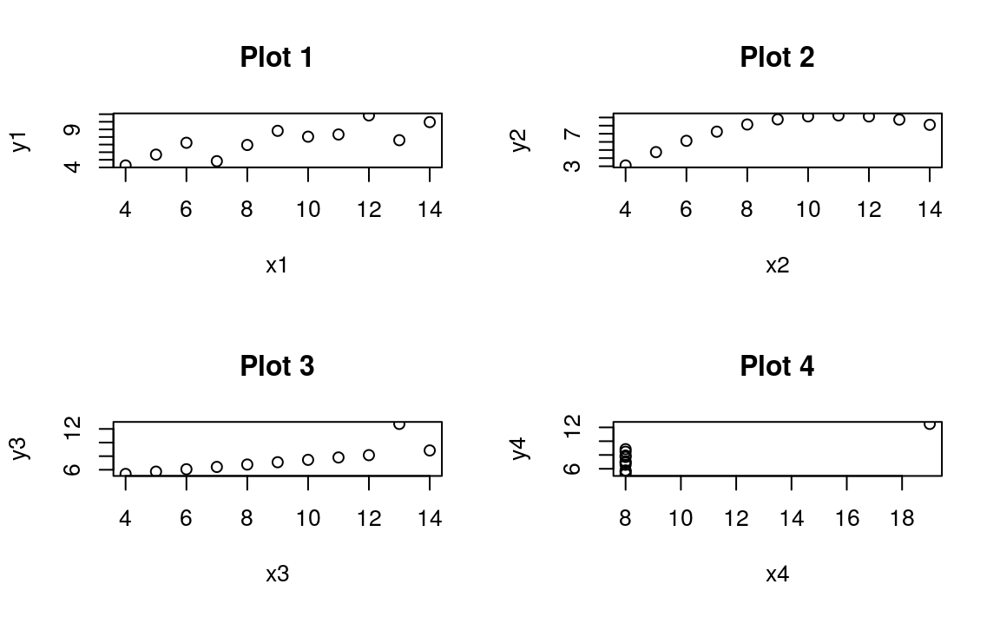
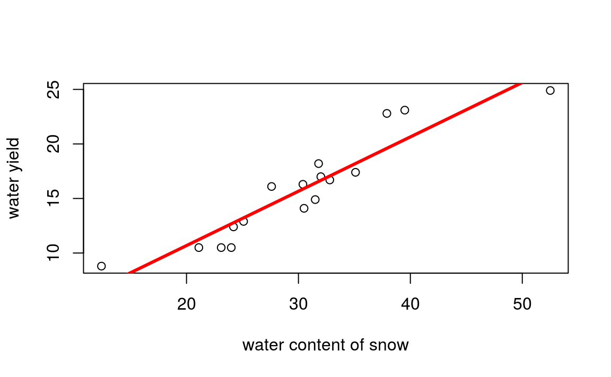
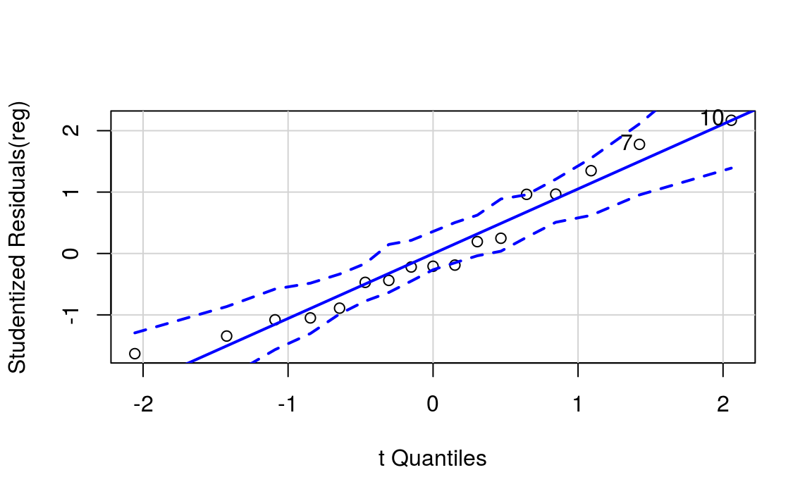
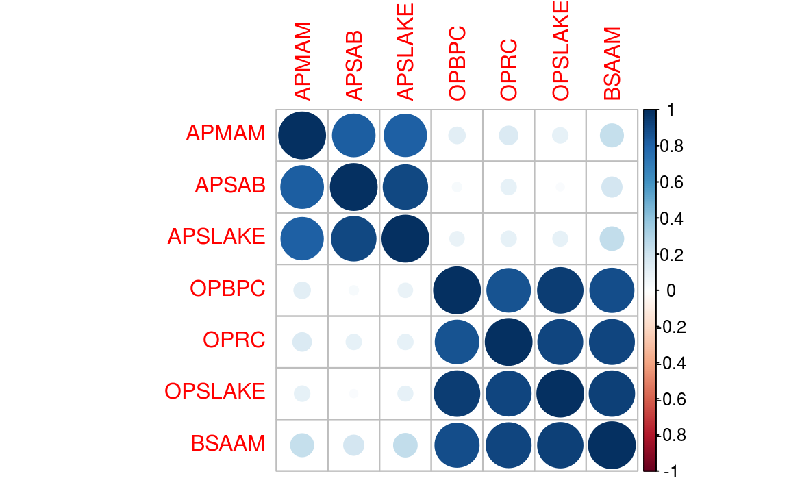
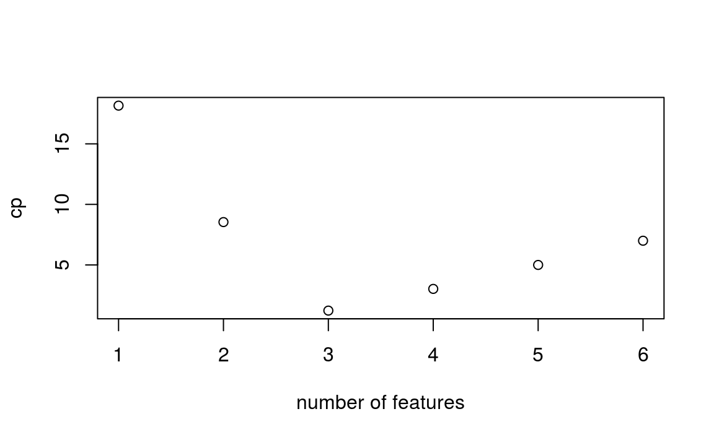
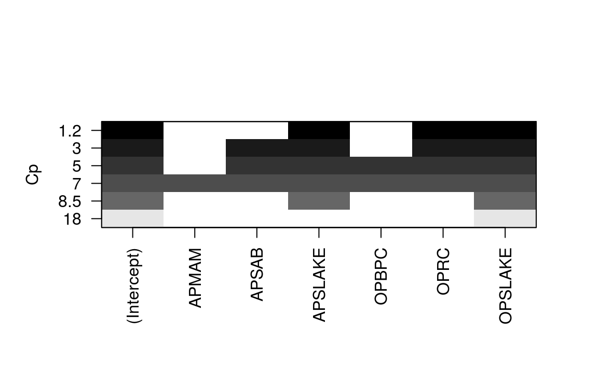
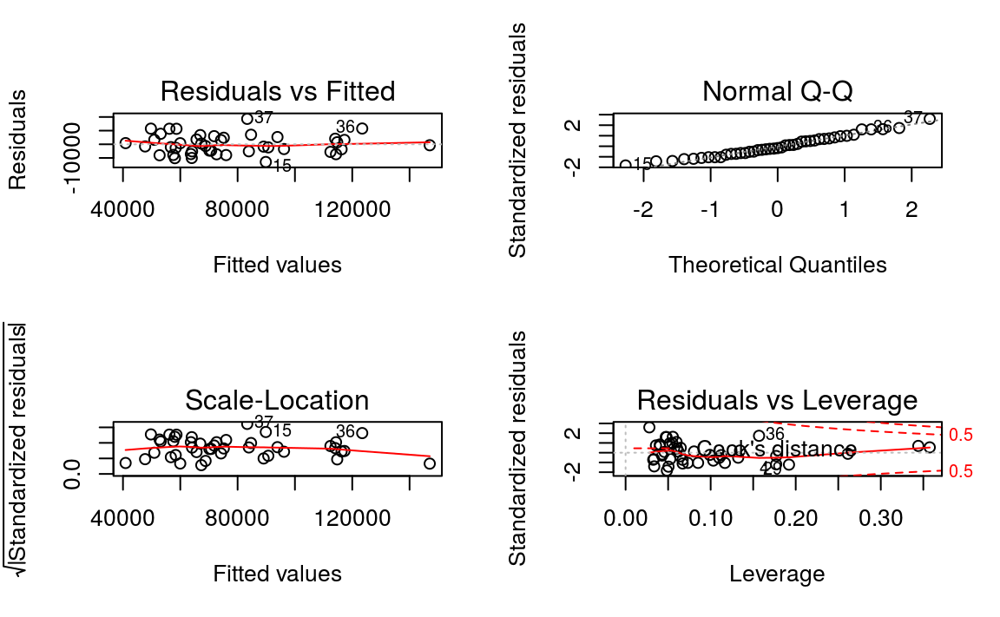
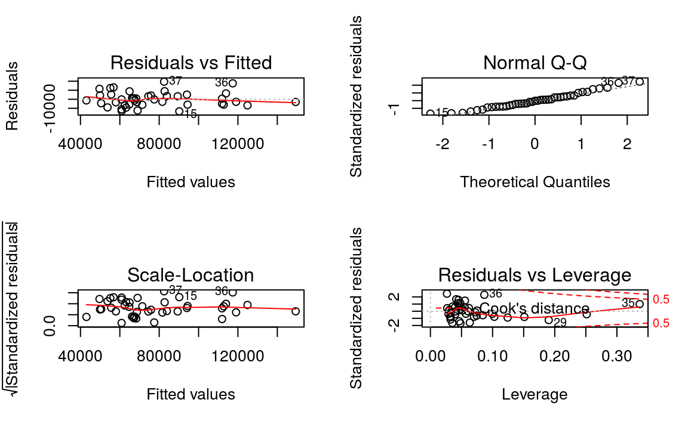

Chapter 2 회귀분석
2.1 상관관계 이해하기
먼저 R에서 제공하는 기본 데이터를 불러옵니다.
## x1 x2 x3 x4 y1 y2 y3 y4
## 1 10 10 10 8 8.04 9.14 7.46 6.58
## 2 8 8 8 8 6.95 8.14 6.77 5.76
## 3 13 13 13 8 7.58 8.74 12.74 7.71
## 4 9 9 9 8 8.81 8.77 7.11 8.84
## 5 11 11 11 8 8.33 9.26 7.81 8.47
## 6 14 14 14 8 9.96 8.10 8.84 7.04각 변수의 상관관계를 살펴보도록 합니다.
## [1] 0.8164## [1] 0.8162둘 간의 상관관계는 0.8164로 동일합니다. 이를 그림으로 확인해보도록 합니다.
par(mfrow = c(2, 2))
plot(x1, y1, main = 'Plot 1')
plot(x2, y2, main = 'Plot 2')
plot(x3, y3, main = 'Plot 3')
plot(x4, y4, main = 'Plot 4')
Plot 1은 선형관계를, Plot 2는 곡선 모양을, Plot 3은 특이점이, Plot 4는 특이점 하나만이 상관관계가 있는것 처럼 보입니다. 이처럼 상관관계에만 전적으로 의존하면 제대로 된 결과를 확인할 수 없습니다.
2.2 회귀의 이해
회귀분석의 식은 다음과 같이 나타납니다.
\(y = a + bx\)
- \(y\): 종속변수
- \(x\): 독립변수
- \(b\): 기울기. \(x\)가 증가할 때마다 직선이 얼마나 올라가는지를 명시
- \(a\): 절편. 직선이 세로 \(y\)축과 교차하는 지점을 명시
2.2.1 보통 최소 제곱(OLS) 추정
OLS 회귀의 목표는 다음 방정식을 최소화하는 작업입니다.
- \(\sum(y_i - \hat{y_i})^2 = \sum{e_i}^2\)
즉 실제 값과 예측 값의 차로 \(e\)(오차)를 정의됩니다.
\(\bar{y} = a + b\bar{x}\)에서 다음식이 유도됩니다.
- \(a = \bar{y} - b\bar{x}\)
- \(b = \frac{\sum(x_i - \bar{x})(y_i - \bar{y})}{\sum(x_i - \bar{x})^2}\)
- \(Var(x) = \frac{\sum(x_i - \bar{x})^2}{n}\)
- \(Cov(x,y) = \frac{\sum(x_i - \bar{x})(y_i - \bar{y})}{n}\)
따라서 b는 다음과 같이 나타낼 수 있습니다.
- \(b = \frac{Cov(x,y)}{Var(x)}\)
R에서 해당 계수는 lm() 함수를 이용해 손쉽게 추정할 수 있습니다.
2.3 단변량 회귀분석
2.3.1 챌린저 호 데이터
미국 우주왕복선 챌린저가 로켓 부스터 고장으로 분해되면서 일곱 명의 승무원이 사망했으며, 잠재 요인으로 발사 온도가 의심되었습니다. 로켓 연결 부분의 밀봉을 담당하는 패킹용 고무 오링이 40°F 미만에서는 테스트되지 않았었고, 발사일의 날씨가 평소와 달리 매우 춥고 영하(31°F)인 상태였기 때문입니다.
다음 데이터는 온도에 따른 오링의 손상여부 테스트 데이터입니다.
challenger = read.csv('http://www.math.usu.edu/~symanzik/teaching/2009_stat6560/RDataAndScripts/sharif_abbass_project1_challenger.csv')
plot(challenger$temperature, challenger$r,
xlab = 'Temp', ylab = 'Damage', pch = 1)
abline(v = 65)
고온에서 발사될 때 오링의 손상 이벤트가 적어지는 경향이 있습니다. 회귀분석을 통해 둘간의 관계를 살펴보도록 합니다.
##
## Call:
## lm(formula = r ~ temperature, data = challenger)
##
## Residuals:
## Min 1Q Median 3Q Max
## -0.5608 -0.3944 -0.0854 0.1056 1.8671
##
## Coefficients:
## Estimate Std. Error t value Pr(>|t|)
## (Intercept) 3.6984 1.2195 3.03 0.0063 **
## temperature -0.0475 0.0174 -2.73 0.0127 *
## ---
## Signif. codes: 0 '***' 0.001 '**' 0.01 '*' 0.05 '.' 0.1 ' ' 1
##
## Residual standard error: 0.577 on 21 degrees of freedom
## Multiple R-squared: 0.261, Adjusted R-squared: 0.226
## F-statistic: 7.43 on 1 and 21 DF, p-value: 0.0127temperature의 회귀계수가 -0.05로써 온도와 손상 이벤트 간에는 역의 관계가 있음이 보입니다. 당시 온도인 31°F를 대입하면 오링의 예상 손상 이벤트는 \(3.69841 + 31 \times (-0.04754) = 2.22467\) 이 됩니다.
회귀분석 결과를 그림으로 확인해보도록 하겠습니다.
plot(challenger$temperature, challenger$r,
xlab = 'Temp', ylab = 'Damage', pch = 1)
abline(reg.challenger, lwd = 3, col = 'red')
2.3.2 미국 와이오밍 주 용출량 예측
미국 와이오밍 주 스네이크 강 유역의 용출량을 예측변수, 해당 연도 눈의 강우량을 이용하여 예측합니다. 먼저 해당 데이터를 그림으로 나타내봅니다.
## content yield
## 1 23.1 10.5
## 2 32.8 16.7
## 3 31.8 18.2
## 4 32.0 17.0
## 5 30.4 16.3
## 6 24.0 10.5
양 끝에 특이점 두개가 있습니다. 다음으로 lm() 함수를 이용해 단변량 회귀분석을 실행합니다.
##
## Call:
## lm(formula = yield ~ content, data = snake)
##
## Residuals:
## Min 1Q Median 3Q Max
## -2.179 -1.515 -0.362 1.628 3.197
##
## Coefficients:
## Estimate Std. Error t value Pr(>|t|)
## (Intercept) 0.7254 1.5488 0.47 0.65
## content 0.4981 0.0495 10.06 0.000000046 ***
## ---
## Signif. codes: 0 '***' 0.001 '**' 0.01 '*' 0.05 '.' 0.1 ' ' 1
##
## Residual standard error: 1.74 on 15 degrees of freedom
## Multiple R-squared: 0.871, Adjusted R-squared: 0.862
## F-statistic: 101 on 1 and 15 DF, p-value: 0.0000000463content 변수가 유의미한 변수임이 확인됩니다. 다음으로 산포도에 회귀식을 그려보도록 하겠습니다.

회귀분석의 가정은 다음과 같습니다.
- 선형성(linearity): 독립 변수(x)와 종속 변수(y) 사이에 선형적 관계
- 오류항의 비상관(non-correlation): 오류항 사이에 상관관계가 없음
- 등분산성(homoscedasticity): 오류항은 정규분포를 따르며 일정한 분산을 가짐. 이 가정을 위배되면 이분산성(heteroscedasticity)
- 비공선성(non-collinearity): 두 예측 변수 사이에도 선형적인 관계가 있으면 안됨
- 특이점의 부재(absence of outliers): 특이점이 있으면 추정값이 심하게 왜곡될 수 있음
회귀분석 결과에 plot() 함수를 입력하여 해당 가정을 확인할 수 있습니다.

car 패키지의 qqPlot() 함수를 통해 Q-Q 플롯의 신뢰구간을 확인할 수 있습니다.
## [1] 7 10
2.4 다변량 회귀분석
2.4.1 다이아몬드 데이터
다이아몬드 가격에 영향을 미치는 요소에 대해 회귀분석을 실시하도록 합니다.
## # A tibble: 6 x 10
## carat cut color clarity depth table price x y z
## <dbl> <ord> <ord> <ord> <dbl> <dbl> <int> <dbl> <dbl> <dbl>
## 1 0.23 Ideal E SI2 61.5 55 326 3.95 3.98 2.43
## 2 0.21 Premium E SI1 59.8 61 326 3.89 3.84 2.31
## 3 0.23 Good E VS1 56.9 65 327 4.05 4.07 2.31
## 4 0.290 Premium I VS2 62.4 58 334 4.2 4.23 2.63
## 5 0.31 Good J SI2 63.3 58 335 4.34 4.35 2.75
## 6 0.24 Very Good J VVS2 62.8 57 336 3.94 3.96 2.48종속변수로 price, 독립변수로 caret, depth, table 피처를 사용하도록 하겠습니다.
- caret: 다이아몬드 무게
- depth: 깊이 비율, z / mean(x, y)
- table: 가장 넓은 부분의 너비 대비 다이아몬드 꼭대기의 너비
##
## Call:
## lm(formula = price ~ carat + depth + table, data = diamonds)
##
## Residuals:
## Min 1Q Median 3Q Max
## -18288 -786 -33 527 12487
##
## Coefficients:
## Estimate Std. Error t value Pr(>|t|)
## (Intercept) 13003.44 390.92 33.3 <2e-16 ***
## carat 7858.77 14.15 555.4 <2e-16 ***
## depth -151.24 4.82 -31.4 <2e-16 ***
## table -104.47 3.14 -33.3 <2e-16 ***
## ---
## Signif. codes: 0 '***' 0.001 '**' 0.01 '*' 0.05 '.' 0.1 ' ' 1
##
## Residual standard error: 1530 on 53936 degrees of freedom
## Multiple R-squared: 0.854, Adjusted R-squared: 0.854
## F-statistic: 1.05e+05 on 3 and 53936 DF, p-value: <2e-16price와 carat은 양의 관계, depth와 table은 음의 관계가 있습니다.
2.4.2 캘리포니아 물 가용량
캘리포니아 오웬스 벨리의 여섯 지점에서 측정한 강설량을 토대로 물 가용량을 예측해보도록 하겠습니다.
## 'data.frame': 43 obs. of 8 variables:
## $ Year : int 1948 1949 1950 1951 1952 1953 1954 1955 1956 1957 ...
## $ APMAM : num 9.13 5.28 4.2 4.6 7.15 9.7 5.02 6.7 10.5 9.1 ...
## $ APSAB : num 3.58 4.82 3.77 4.46 4.99 5.65 1.45 7.44 5.85 6.13 ...
## $ APSLAKE: num 3.91 5.2 3.67 3.93 4.88 4.91 1.77 6.51 3.38 4.08 ...
## $ OPBPC : num 4.1 7.55 9.52 11.14 16.34 ...
## $ OPRC : num 7.43 11.11 12.2 15.15 20.05 ...
## $ OPSLAKE: num 6.47 10.26 11.35 11.13 22.81 ...
## $ BSAAM : int 54235 67567 66161 68094 107080 67594 65356 67909 92715 70024 ...Year는 불필요한 변수이므로 삭제해주도록 합니다.
## APMAM APSAB APSLAKE OPBPC OPRC OPSLAKE BSAAM
## 1 9.13 3.58 3.91 4.10 7.43 6.47 54235
## 2 5.28 4.82 5.20 7.55 11.11 10.26 67567
## 3 4.20 3.77 3.67 9.52 12.20 11.35 66161
## 4 4.60 4.46 3.93 11.14 15.15 11.13 68094
## 5 7.15 4.99 4.88 16.34 20.05 22.81 107080
## 6 9.70 5.65 4.91 8.88 8.15 7.41 67594각 변수들 간 상관관계를 살펴보도록 하겠습니다.
## APMAM APSAB APSLAKE OPBPC OPRC OPSLAKE BSAAM
## APMAM 1.0000 0.82769 0.81608 0.12239 0.1544 0.10754 0.2386
## APSAB 0.8277 1.00000 0.90030 0.03954 0.1056 0.02961 0.1833
## APSLAKE 0.8161 0.90030 1.00000 0.09345 0.1064 0.10059 0.2493
## OPBPC 0.1224 0.03954 0.09345 1.00000 0.8647 0.94335 0.8857
## OPRC 0.1544 0.10564 0.10638 0.86471 1.0000 0.91914 0.9196
## OPSLAKE 0.1075 0.02961 0.10059 0.94335 0.9191 1.00000 0.9384
## BSAAM 0.2386 0.18329 0.24934 0.88575 0.9196 0.93844 1.0000
AP와 OP 변수들 간의 강한 상관관계가 존재하며, 다중 공선성 문제에 맞닥뜨릴 것이라는 사실을 알 수 있습니다.
lm() 함수를 통해 회귀분석을 실시하며, 독립변수로 모든 변수를 입력하고자 할 때는 변수를 모두 입력하는 대신 y ~ . 형태로 입력이 가능합니다.
##
## Call:
## lm(formula = BSAAM ~ ., data = socal.water)
##
## Residuals:
## Min 1Q Median 3Q Max
## -12690 -4936 -1424 4173 18542
##
## Coefficients:
## Estimate Std. Error t value Pr(>|t|)
## (Intercept) 15944.7 4099.8 3.89 0.00042 ***
## APMAM -12.8 708.9 -0.02 0.98572
## APSAB -664.4 1522.9 -0.44 0.66524
## APSLAKE 2270.7 1341.3 1.69 0.09911 .
## OPBPC 69.7 461.7 0.15 0.88084
## OPRC 1916.5 641.4 2.99 0.00503 **
## OPSLAKE 2211.6 752.7 2.94 0.00573 **
## ---
## Signif. codes: 0 '***' 0.001 '**' 0.01 '*' 0.05 '.' 0.1 ' ' 1
##
## Residual standard error: 7560 on 36 degrees of freedom
## Multiple R-squared: 0.925, Adjusted R-squared: 0.912
## F-statistic: 73.8 on 6 and 36 DF, p-value: <2e-162.4.3 최적화를 통한 변수 선택
변수 선택에는 크게 두가지 방법이 있습니다.
단계적 전방 선택법(forward stepwise selection): 피처가 하나도 없는 모형에서 시작해, 피처를 한 번에 하나씩 더해 모든 피처가 포함될 때까지 계속한다. 잔차 제곱합(RSS)이 제일 작은 피처를 선택
단계적 후방 회귀분석(backward stepwise regression): 모형에 모든 피처를 더해 놓고 시작해 가장 덜 유용한 피처를 한 번에 하나씩 제거
두 방법 모두 편향된 회귀 계수를 생성할 수 있으므로, 최량 부분 집합 회귀 분석법(best subsets regression)을 실시힙합니다. 이는 가능한 모든 피처의 조합을 이용해 모형을 적합화합니다. leaps 패키지의 regsubsets() 함수를 통해 최량 부분 집합 회귀를 수행할 수 있습니다.
library(leaps)
reg.sub = regsubsets(BSAAM ~ ., data = socal.water)
best.summary = summary(reg.sub)
best.summary$rss## [1] 3264010454 2600641788 2068947585 2057133378 2055849271 2055830733## [1] 6피처가 6개 일때 RSS가 가장 낮음이 보입니다. 그러나 피처를 더하면 더할 수록 RSS는 감소하고 \(R^2\)는 증가하기 마련입니다. 따라서 피처 선택을 위해 여러 기준을 살펴봐야 합니다.
\(AIC = n \times log(\frac{RSS_p}{n}) + 2 \times p\)
\(p\): 테스트하고 있는 모형의 피처 수\(C_p = \frac{RSS_p}{MSE_f} - n + 2 \times p\)
\(MSE_t\): 모든 피처를 포함한 모형의 평균 제곱 오차
\(n\): 표본 크기\(BIC = n \times log \frac{RSS_p}{n} + p \times log(n)\)
\(Adjusted\ R^2 = 1 - \frac{RSS}{n-p-1} / \frac{R^2}{n-1}\)
선형 모형에서 AIC와 Cp는 서로 비례하므로 Cp만 살펴보도록 하며, Cp는 leaps 패키지로 출력할 수 있습니다.

피처가 3개로 구성된 모형이 가장 작은 Cp 값을 가집니다.

가장 작은 Cp 값을 제공하는 피처를 나타내고 있으며 APSLAKE, OPRC, OPSLAKE가 이 모형에 포함된 피처들입니다.
위에서 선택된 피처만으로 다중 회귀분석을 실시하도록 하겠습니다.
##
## Call:
## lm(formula = BSAAM ~ APSLAKE + OPRC + OPSLAKE, data = socal.water)
##
## Residuals:
## Min 1Q Median 3Q Max
## -12964 -5140 -1252 4446 18649
##
## Coefficients:
## Estimate Std. Error t value Pr(>|t|)
## (Intercept) 15425 3638 4.24 0.00013 ***
## APSLAKE 1712 500 3.42 0.00148 **
## OPRC 1798 568 3.17 0.00300 **
## OPSLAKE 2390 447 5.35 0.0000042 ***
## ---
## Signif. codes: 0 '***' 0.001 '**' 0.01 '*' 0.05 '.' 0.1 ' ' 1
##
## Residual standard error: 7280 on 39 degrees of freedom
## Multiple R-squared: 0.924, Adjusted R-squared: 0.919
## F-statistic: 159 on 3 and 39 DF, p-value: <2e-163개의 피처만으로 회귀분석한 \(R^2\)가 0.9185로써, 전체 피처로 회귀분석한 \(R^2\)인 0.9123 대비 증가합니다.

2.4.4 Robustness Check
회귀분석의 가정이 맞는지 강건성 체크를 해보도록 하겠습니다.
2.4.4.1 다중공선성
다중공선성(multicollinearity) 여부를 조사하기 위해서는 분산 팽창 인자(VIF: Variance inflation factor) 통계량을 사용해야 합니다. VIF는 모든 피처가 들어 있는 전체 모형을 적합화할 때 계산된 특정한 피처 계수의 분산과 그 피처만 들어 있는 부분 모형으로 적합화했을 때의 계수 분산의 비율입니다.
\[VIF = 1 / (1 - R^2_i)\]
car 패키지의 vif() 함수를 통해 해당 값을 계산할 수 있습니다.
## APSLAKE OPRC OPSLAKE
## 1.011 6.453 6.445OPRC과 OPSLAKE의 vif가 매우 높게 나오며, 이는 OPRC와 OPSLAKE 간 상관관계가 지나치게 높기 때문입니다.

따라서 둘 중 하나의 변수를 탈락시키는 것이 좋습니다.
## [1] 0.8778 0.9002 0.9185 0.9169 0.9147 0.9123변수가 2개인 경우 \(R^2\)는 0.900이며, 3개인 경우 \(R^2\)는 0.918여서 증가가 경미합니다. 변수 2개로만 이뤄진 모형의 가정을 점검합니다.
##
## Call:
## lm(formula = BSAAM ~ APSLAKE + OPSLAKE, data = socal.water)
##
## Residuals:
## Min 1Q Median 3Q Max
## -13336 -5893 -172 4220 19500
##
## Coefficients:
## Estimate Std. Error t value Pr(>|t|)
## (Intercept) 19145 3812 5.02 0.000011 ***
## APSLAKE 1769 554 3.19 0.0027 **
## OPSLAKE 3690 196 18.83 < 2e-16 ***
## ---
## Signif. codes: 0 '***' 0.001 '**' 0.01 '*' 0.05 '.' 0.1 ' ' 1
##
## Residual standard error: 8060 on 40 degrees of freedom
## Multiple R-squared: 0.905, Adjusted R-squared: 0.9
## F-statistic: 190 on 2 and 40 DF, p-value: <2e-16## APSLAKE OPSLAKE
## 1.01 1.01
2.4.4.2 등분산성
등분산성에 여부는 브루시-페이건(Breusch-Pagan, BP) 테스트를 통해 확인이 가능하며, lmtest 패키지의 bptest() 함수를 이용합니다.
##
## studentized Breusch-Pagan test
##
## data: fit.2
## BP = 0.0046, df = 2, p-value = 1BP 테스트의 귀무가설과 대립가설은 다음과 같습니다
- 귀무가설: “오차항은 등분산성을 띤다”
- 대립가설: “오차항은 이분산성을 띤다”
p 값이 0.9977로 매우크므로 귀무가설을 기각할 근거가 부족해, 오차항은 등분산을 띤다는 것을 알 수 있습니다.
2.4.5 실제와 예측간의 차이
model$fitted.values에는 모델을 통해 나온 예측값이 있으므로, 실제 값과 차이를 살펴볼 수 있습니다.
plot(fit.2$fitted.values, socal.water$BSAAM,
xlab = 'predicted', ylab = 'actual', main = 'Predicted vs. Actual')
ggplot을 이용 이용하면 더욱 깔끔하게 이를 나타낼 수 있다.
library(ggplot2)
library(magrittr)
socal.water['Actual'] = water$BSAAM
socal.water$Forecast = predict(fit.2)
socal.water %>%
ggplot(aes(x = Forecast, y = Actual)) +
geom_point() +
geom_smooth(method = 'lm', se = FALSE) +
labs(title = 'Forecast vs. Actuals')
2.5 다른 고려사항
2.5.1 질적 피처
질적 피처(qualitative feature)에서는 남성/여성 또는 나쁨/중간/좋음 등 2개나 그 이상의 단계를 정할 수 있습니다.
예를 들어 성별처럼 두 가지 단계를 갖는 피처가 있다면, 지표 혹은 더미 피처라는 변수를 만들어 임의로 단계 하나는 0, 다른 하나는 1로 줄 수 있습니다. 지표만을 이용해 모형을 만들어도 여전히 선형 모형은 기존 식과 같습니다.
\[Y = B_0 + B_1x + e\]
피처가 남성일 때 0, 여성일 때 1로 할당할 경우, 남성의 기대값은 \(y\) 절편인 \(B_0\)이고, 여성의 기대값은 \(B_0 + B_1x\) 입니다. R 내에서 factor 형태로 된 피처를 사용할 경우 자동으로 질적 피처로 계산이 됩니다.
예제로 ISLR 패키지의 Carseats 데이터 세트를 사용하도록 합니다.
## 'data.frame': 400 obs. of 11 variables:
## $ Sales : num 9.5 11.22 10.06 7.4 4.15 ...
## $ CompPrice : num 138 111 113 117 141 124 115 136 132 132 ...
## $ Income : num 73 48 35 100 64 113 105 81 110 113 ...
## $ Advertising: num 11 16 10 4 3 13 0 15 0 0 ...
## $ Population : num 276 260 269 466 340 501 45 425 108 131 ...
## $ Price : num 120 83 80 97 128 72 108 120 124 124 ...
## $ ShelveLoc : Factor w/ 3 levels "Bad","Good","Medium": 1 2 3 3 1 1 3 2 3 3 ...
## $ Age : num 42 65 59 55 38 78 71 67 76 76 ...
## $ Education : num 17 10 12 14 13 16 15 10 10 17 ...
## $ Urban : Factor w/ 2 levels "No","Yes": 2 2 2 2 2 1 2 2 1 1 ...
## $ US : Factor w/ 2 levels "No","Yes": 2 2 2 2 1 2 1 2 1 2 ...해당 데이터 중 정량적 피처인 광고(Advertising)과 질적 피처인 진열대 위치(ShelveLoc)만을 이용해 카시트(Carseats)의 판매량을 예측합니다. 이 중 진열대 위치는 Bad, Good, Medium 총 3개 level로 구성되어 있습니다.
##
## Call:
## lm(formula = Sales ~ Advertising + ShelveLoc, data = Carseats)
##
## Residuals:
## Min 1Q Median 3Q Max
## -6.648 -1.620 -0.048 1.531 6.410
##
## Coefficients:
## Estimate Std. Error t value Pr(>|t|)
## (Intercept) 4.8966 0.2521 19.43 < 2e-16 ***
## Advertising 0.1007 0.0169 5.95 5.9e-09 ***
## ShelveLocGood 4.5769 0.3348 13.67 < 2e-16 ***
## ShelveLocMedium 1.7514 0.2748 6.37 5.1e-10 ***
## ---
## Signif. codes: 0 '***' 0.001 '**' 0.01 '*' 0.05 '.' 0.1 ' ' 1
##
## Residual standard error: 2.24 on 396 degrees of freedom
## Multiple R-squared: 0.373, Adjusted R-squared: 0.369
## F-statistic: 78.6 on 3 and 396 DF, p-value: <2e-16진열대 위치가 좋은 경우(ShelveLocGood)는 위치가 나쁜 경우의 판매량인 Intercept 값인 4.89662 대비 4.57686이 더 높습니다.
2.5.2 상호작용 항
어떤 피처가 예측에 미치는 영향이 또 다른 피처에 종속적일 경우, 이 두 피처는 서로 상호작용한다고 말합니다.
\[Y = B_0 + B_1x + B_2 + B_1B_2x + e\]
MASS 패키지의 Boston 데이터 세트를 이용해 상호작용 회귀분석을 살펴보도록 하겠습니다.
## 'data.frame': 506 obs. of 14 variables:
## $ crim : num 0.00632 0.02731 0.02729 0.03237 0.06905 ...
## $ zn : num 18 0 0 0 0 0 12.5 12.5 12.5 12.5 ...
## $ indus : num 2.31 7.07 7.07 2.18 2.18 2.18 7.87 7.87 7.87 7.87 ...
## $ chas : int 0 0 0 0 0 0 0 0 0 0 ...
## $ nox : num 0.538 0.469 0.469 0.458 0.458 0.458 0.524 0.524 0.524 0.524 ...
## $ rm : num 6.58 6.42 7.18 7 7.15 ...
## $ age : num 65.2 78.9 61.1 45.8 54.2 58.7 66.6 96.1 100 85.9 ...
## $ dis : num 4.09 4.97 4.97 6.06 6.06 ...
## $ rad : int 1 2 2 3 3 3 5 5 5 5 ...
## $ tax : num 296 242 242 222 222 222 311 311 311 311 ...
## $ ptratio: num 15.3 17.8 17.8 18.7 18.7 18.7 15.2 15.2 15.2 15.2 ...
## $ black : num 397 397 393 395 397 ...
## $ lstat : num 4.98 9.14 4.03 2.94 5.33 ...
## $ medv : num 24 21.6 34.7 33.4 36.2 28.7 22.9 27.1 16.5 18.9 ...이 중 사용할 피처의 설명은 다음과 같습니다.
- medv: 주택 가치의 중위값
- lstat: 낮은 사회 경제적 지위를 갖는 가구의 백분율
- age: 주택의 연령
lm() 함수에 \(feature1 * feature2\)를 쓰면, 각 피처뿐만 아니라 두 피처의 상호작용 항도 모형에 포함됩니다.
##
## Call:
## lm(formula = medv ~ lstat * age, data = Boston)
##
## Residuals:
## Min 1Q Median 3Q Max
## -15.81 -4.04 -1.33 2.08 27.55
##
## Coefficients:
## Estimate Std. Error t value Pr(>|t|)
## (Intercept) 36.088536 1.469835 24.55 < 2e-16 ***
## lstat -1.392117 0.167456 -8.31 8.8e-16 ***
## age -0.000721 0.019879 -0.04 0.971
## lstat:age 0.004156 0.001852 2.24 0.025 *
## ---
## Signif. codes: 0 '***' 0.001 '**' 0.01 '*' 0.05 '.' 0.1 ' ' 1
##
## Residual standard error: 6.15 on 502 degrees of freedom
## Multiple R-squared: 0.556, Adjusted R-squared: 0.553
## F-statistic: 209 on 3 and 502 DF, p-value: <2e-16lstat은 매우 예측력이 높은 피처이며, age는 예측력이 높지 않습니다. 그러나 이 두 피처는 유의한 상호작용을 보이며, medv를 설명하는 변수입니다.